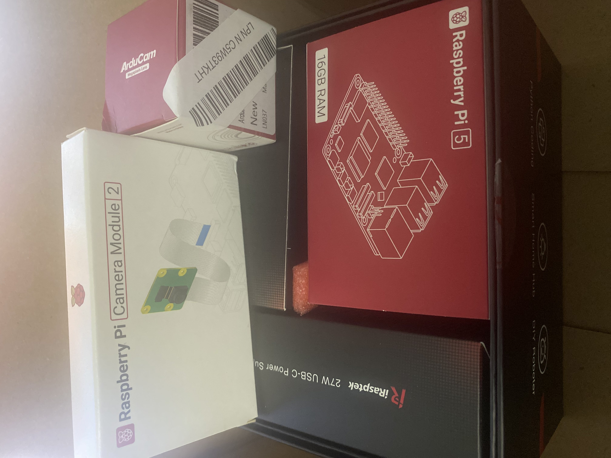
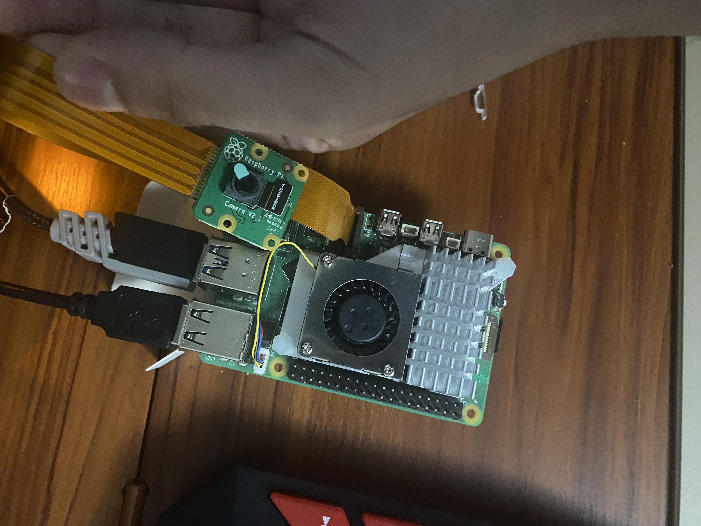

Individual Discovery Project
For this project, the main objective is to utilize a Raspberry pi 5 and attach a camera while having a pre-trained dataset, so the pi would know what it is trying to detect while giving an identification guess and also giving a certain confidence value related to the guess.
I used the following tools and technologies:
- Raspberry Pi 5
- Camera attachment
- Wide camera lens


Here are some of the pictures that ressemble the project.
The final result was a working prototype that ...(not finished).